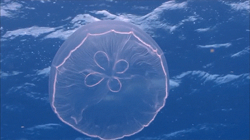
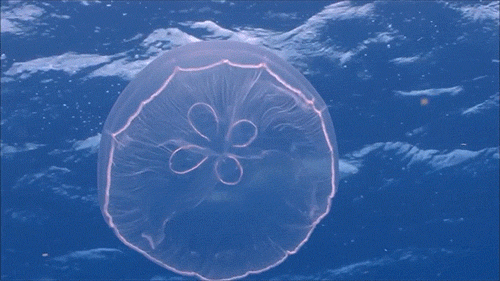
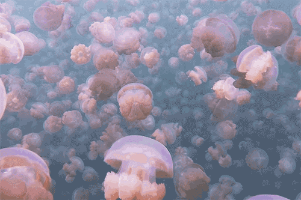
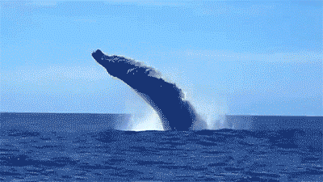
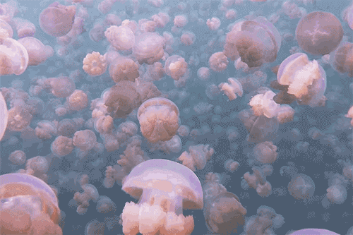
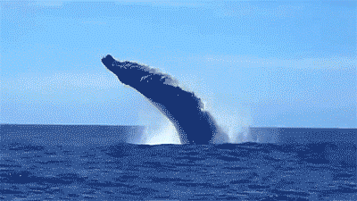

 



¿Que es la Vida Acuatica?
La vida acuatica ser refiere a los organismos que habitan lugares como oceanos, mares, lagos, rios, estanques. Este amplio termino despliega una gran diversidad adaptativa de vida dentro de los ecosistemas acuaticos.
Tipos de vida Acuatica
Algunos tipos principales:
Peces
Mamiferos marinos
Crustáceos
Moluscos
Reptiles acuáticos
Anfibios acuáticos
Plantas acuáticas
Tipos de peces
Algunos tipos principales:
Peces óseos
Peces cartilaginesos
Peces de agua dulce
Peces de agua salada
Peces tropicales de acuario
Peces de aguas profundas
Peces migratorias
Peces de arrecife
Peces electronicos
Tipos de hábitat acuático
Hábitats marinos
Estos hábitats incluyen océanos, mares y marismas. Las mayoría de especies que viven en estos hábitats se desarrollan prácticamente en oscuridad, debido a que la luz solo penetra hasta los 100 metros de profundidad. Además, otra característica principal el la presencia de concentraciones de sales a las cuales la biota está adaptada a vivir.
Hábitats de agua continental
Aquí se incluyen hábitats dentro de cuerpos de aguas que están alejados de mares u océanos, como ríos, lagos, lagunas y más. Según la velocidad de la corriente de agua y la cantidad sedimentos suspendidos, el agua puede ser mas o menos turbia. Precisamente la turbidez y también la profundidad, determinan la claridad y luminosidad del hábitat.
Animales que viven en hábitat acuático
Animales vertebrados
Los animales vertebrados se definen por presentar una columna vertebral. Muchos vertebrados presentan una vida tanto terrestre como acuática como, por ejemplo, las aves acuáticas las cuales anidan y pasan el mayor tiempo en tierra, pero con frecuencia se sumergen en las aguas en busca de alimento. No obstante, en este apartado nos enfocaremos únicamente en los vertebrados que presentan una vida completamente acuática.
Peces:
sin dudas, cuando pensamos en hábitats acuáticos lo primero que se nos viene a la mente son los peces. Ellos respiran a través de las branquias, por lo que no necesitan salir a la superficie para tomar aire.Reptiles acuáticos:
se caracterizan por presentar sistema respiratorio pulmonar. A diferencia de los peces, deben salir a la superficie a respirar. Entre ellos podemos mencionar tortugas marinas y de agua dulce y serpientes, también marinas y de aguas dulces, así como cocodrilos, que también los hay de agua dulce y salada.Mamíferos acuáticos:
al igual que los reptiles presentan sistema respiratorio pulmonar, por lo que deben salir a la superficie para respirar. Por ser mamíferos, presentan mamas con las que alimentan a sus crías. Como ejemplos podemos nombrar a ballenas, belugas, delfines, manatíes y más.Animales invertebrados
En contraposición a los vertebrados, los invertebrados no presentan una columna vertebral. Este grupo es megadiverso y muchos de ellos son de hábitos acuáticos como moluscos (como los caracoles o los pulpos), crustáceos (como los cangrejos), equinodermos (entre ellos la estrella de mar y el erizo), poríferos (como las esponjas marinas) y muchos más.